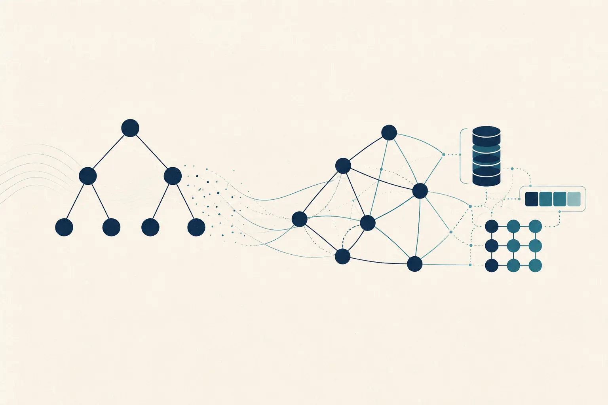

MODULO I
Algoritmi e Strutture Dati
Camil Demetrescu, Irene Finocchi, Giuseppe F. Italiano
McGraw-Hill
Corso · 12 CFU
Modulo I + Modulo II

01
Per i primi 6 crediti del corso si suggerisce come testo di riferimento:
MODULO I
Camil Demetrescu, Irene Finocchi, Giuseppe F. Italiano
McGraw-Hill
[KT05] · MODULO II
Jon Kleinberg, Éva Tardos
Addison-Wesley, 2005
Gli argomenti svolti possono essere reperiti anche su altri testi, a scelta dello studente. Ulteriori riferimenti sono suggeriti nei lucidi della lezione introduttiva.
02
Fondamenti dell’analisi degli algoritmi e principali strutture dati. I collegamenti sono predisposti per i materiali dell’edizione corrente.
Diario delle lezioni · Modulo I
Apri il PDF ↓03
Tecniche avanzate di progettazione e analisi degli algoritmi, con materiali organizzati secondo la stessa struttura del primo modulo.
Diario delle lezioni · Modulo II
Apri il PDF ↓04
05
Possiamo incontrarci sia in presenza sia online. Mandatemi una email per prendere appuntamento.